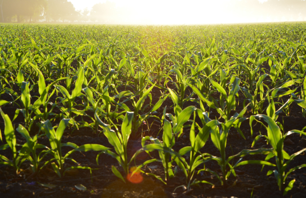

De onde vem o que comemos?
Os alimentos podem ter diferentes origens:
- vegetal, como grãos, folhas, frutos e raízes;
- animal, como carnes, leite e ovos;
- mineral, como água e sais minerais.
Dessas origens, a vegetal e a animal são produzidas no campo, mas a produção no campo não é constante entre todos os lugares e produtores. Pelo contrário, ela pode ocorrer de duas formas quase opostas, o agronegócio e a agricultura familiar.
Agronegócio
O agronegócio é a parte da produção que foca em exportar e alimentar o gado. Ele é conhecido por impulsionar o PIB e por receber a maior parte dos incentivos financeiros. Apesar disso, ele representa somente 30% dos alimentos consumidos, conforme pesquisa de 2023 do Instituto Brasileiro de Geografia e Estatística (IBGE).
Esse ramo é dominado por poucas pessoas, em sua maioria vindas de famílias historicamente ricas, que aliam-se a políticos para aumentar seus recursos e modernizar sua produção, concentrando ainda mais a renda.
Agricultura Familiar

A agricultura familiar, por outro lado, é composta de pessoas mais simples que, como o nome sugere, trabalham em família no campo; contam com menos incentivos financeiros do Estado e menos influência na política, mas produziram cerca de 70% dos alimentos que foram às mesas da população em 2023, ainda segundo o IBGE.
Impactos ambientais
Um estudo do Observatório do Clima apontou que, em 2021, mais de 70% das emissões de gases do efeito estufa do Brasil vieram, direta ou indiretamente, da produção de alimentos. Esse número é extremamente preocupante, considerando os impactos dessas substâncias, que contribuem para o aquecimento global e ameaçam a manutenção da vida no planeta como conhecemos. Mas o mais revoltante é saber que toda essa destruição acontece com o propósito de enriquecer os já abastados grandes proprietários de terras.
Produzir alimentos libera poluentes por dois principais motivos:
O metabolismo dos animais
Gado, porcos, aves, todos estão respirando, digerindo e liberando dejetos, e pode parecer inofensivo, e seria, se essas populações tivessem um tamanho sustentável; mas não é assim, a nossa estrutura social não permite um sistema que produza o básico, ela exige luxos e excessos, e mantê-los requer uma produção em uma escala desmedida, muito além de algo que o planeta possa considerar tolerável.
Nisso, existem quase 2 bilhões de animais no país (número quase 10 vezes maior que o de habitantes) liberando constantemente dióxido de carbono, vindo de sua respiração, e gás metano, dos seus processos digestivos.
O desmatamento para dar lugar à produção
O segundo motivo é menos direto, mas mais intenso. Cultivar alimentos e criar animais exige muito espaço, e o melhor lugar para fazer isso é nas matas nativas, claro. O solo das florestas é rico em nutrientes e possui chuvas regulares, excelente para as plantações e para o gado.
O problema é que as árvores removidas estavam transformando o dióxido de carbono, intensificador do efeito estufa, em gás oxigênio.
O que pode ser feito?
Como a produção de alimentos tem um alto impacto devido ao modelo produtivo, implantado por ser o mais adaptado às condições de produção e consumo da sociedade, a forma mais óbvio de reduzir essas consequências é mudar a estrutura de produção, o que seria possível se ocorresse concomitantemente com uma reforma em todas as esferas sociais.
Mas mudar o sistema político e social do mundo requer tempo e esforço inimagináveis; então, podemos recorrer a alternativas mais individuais para diminuir os efeitos negativos do agronegócio.
- Evitar, substituir, reduzir a carne bovina. Essa medida é útil porque, no Brasil, ainda segundo o relatório do Observatório do Clima, de todos os gases poluentes liberados na produção de alimentos, mais de três quartos vêm da criação de gado.
- Consumir menos laticínios. Similar à dica anterior; o leite vem das vacas, menos leite consumido requer menos vacas. Vale ressaltar que, conforme o site especializado na área Carbon Brief, leites vegetais liberam menos da metade de gases do efeito estufa que os de origem animal.
- Evitar o desperdício. Desperdiçar alimentos quer dizer que foram preparados mais que o necessário, e para isso teve que ser produzido mais que o necessário, e, consequentemente, poluído mais que o necessário.
- Preferir alimentos locais. Eles precisam de menos deslocamento, e menos combustível é queimado para que ele chegue à mesa, resultando em um trajeto mais sustentável.
- Cuidar das embalagens e do lixo. Dizer não aos inúmeros utensílios plásticos, sejam sacolas, pratos, copos, canudos, é reduzir a quantidade de resíduos contaminando solos, oceanos e seres vivos. As partículas de plástico se degradam na água, são ingeridas e acabam na corrente sanguínea dos mais variados animais, incluindo o ser humano. E como se não bastasse, a produção de plástico ainda é uma das maiores responsáveis pela liberação de gases do efeito estufa do planeta.
Fome e preços altos
A produção de alimentos tem sido modernizada e vem crescendo nos últimos anos, mas ainda assim enfrentamos aumentos nos preços e no número de pessoas passando fome ao redor do mundo, conforme levantamento de dados divulgados em 2023 pelas professoras da USP Maria Sylvia Macchione Saes e Sílvia Helena Galvão de Miranda. Essas informações mostram que a fome não é causada exclusivamente por uma produção insuficiente de alimentos, existem outros fatores com forte influência.
Enquanto os preços altos decorrem, sim, da produtividade de alimentos, de políticas de importação e exportação ao redor do mundo, das condições climáticas, do caminho percorrido por esses alimentos, pelas condições de trabalho de quem o produziu e diversos outros fatores, a principal causa da fome é, na verdade, a concentração de renda, a divisão desigual dos recursos entre as pessoas, resultando em uma sociedade onde parte consegue se alimentar com qualidade e excessos enquanto outros estão sujeitos à uma fome muita vezes letal.
Referências
As imagens são de domínio público e foram obtidas e/ou alteradas usando a ferramenta Canva
Referências utilizadas na pesquisa para elaboração dos elementos textuais: